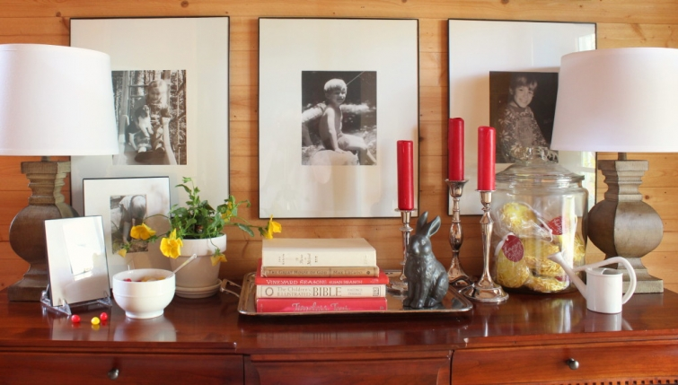

.png)
.PNG)
.PNG)
.PNG)
.PNG)
.PNG)
.JPG)
.JPG)
.PNG)
.PNG)



Happy Spring Break!!! Busy girl here has been spring cleaning to the max! (and shopping and decorating for Easter. 🙂 ) But I did want to pop in to show you a couple of decorating and gift ideas.
.jpg)
I just had to use that stone look bunny from Target. He was too good to pass up, and the Izze can made the perfect height for him to have a sip. 🙂
Remember this is the kids’ playroom. (Actually, now that they are all in their twenties, play means video games and movies. 🙂 ) Either way, some lightheartedness fit with the room.

Now let’s move on to the foyer. Don’t hate me…I had to bring the red back. I know. I am hanging my head in shame. I’ve said it before; Easter is THE most challenging holiday to decorate for around here. I am just not good with spring and pastel colors in this house, but at least I was able to mix the red with yellow. Does that count?
The seasonal decor gods are probably going to get me. 🙁
Here is one end of the foyer buffet…
A close up of the jar…
Inside are decorated cookies that everyone loves from our local bakery. The cookies got bagged with a little paper shred, and a white grosgrain ribbon with a red tag (from Michael’s dollar bin) – decorated with chalk marker – all tied on. Easy-peasy. 🙂
The cookies are in the jar for now, but at the end of the week they will be going to our daughter’s 5 roommates in Orlando.
Here is the other end of the buffet.
The photographs are of our sons on Easter egg hunts when they were young.
And now for the Easter basket this year. One of our sons is working in Atlanta, and the other is in Seattle, so I did not want to mail a complete basket to each of them. (They would much prefer the simplicity of gift cards.) But believe or not, our Disney daughter is suffering from a bad case of homesickness. She has not been home since January, and this is the longest she has ever been away. She loves her job, her roommates, and the fun of Disney, but like the old saying goes…There’s no place like home. So we will be taking her Easter basket to her…or rather a picnic basket to her…filled with some of her favorite things.
Like a pecan pie made by her grandmother…
and cookies and petit fours from the bakery she loves.
I added a few cans of the drink she likes and some chocolate.
(What’s an Easter basket without chocolate?)
Tied on the outside with a yellow ribbon, it is ready to go. I am hoping that between the basket, some time with her parents, a few good meals out, a stay in a nice hotel, and some time relaxing in the pool, she will be over her case of homesickness. It’s worth a try anyway, right?
I’ve got to get back on all my projects now before this week slips by, and I want to have time to show you a little more spring decorating before it’s summer! I hope you are enjoying a beautiful spring day wherever you are..perhaps with a cold drink. 🙂
Until next time…


.PNG)
I am certain your daughter loved her basket – who wouldn’t? I also think you did a great job of decorating for Easter – I didn’t see anything wrong with using red and yellow. It looks very sophisticated but still fun!
Loving the basket for your daughter, what a thoughtful mom you are. I just know she enjoyed everything in there and I hope it took away a little of her homesickness. I am just catching up with all your posts as I am (finally) feeling like myself three weeks post the knee replacement surgery. I think it was a good time of year to go in – dreary end of March, and to recuperate – as spring blossoms forth in April. At least we are hoping for that in New England! I am going to have to take you to task for the red candles, I just know you could put a more charming spin on that, say, a Kelly green candle color! You don’t have to go the pastel route, a vibrant spring color would be fine. (Think all the wonderful things in your garden.)Hope spring break was productive as well as fun and relaxing to some degree. You will be in the home stretch now for the school year so I am sure that brings its own challenges. Enjoy! Enjoy!
————————————————————————-
I think the basket and trip worked wonders for our daughter. Thank you for catching up on all the posts. I hope you’re well on the way to recovery. Candles…a problem. You see I only like those larger ones in our candlesticks here, and my source has stopped selling them. 🙁 So all I have at my disposal are red and white. What I would have LOVED would have been some yellow ones. I am always keeping my eye out for them. And when I find them, I will definitely buy them in some assorted other colors. 🙂 Spring break was productive, and I am looking forward to finishing out this last school year. Summer is 32 school days away. 🙂
Kelly
What a perfect time to be in Orlando! Weather is just right– for a nice Easter weekend! I’ve been home from the beach 5 days and “paying” for my 30 days R&R!! Rushing to clean, decorate, make baskets and planning dinner for 12! But it is all falling into place– even found the copper plant stake you wrote ” happy Easter” with your chalk pen for me!! I, too, do my best work under pressure– with the help of my “lesson plan” style To Do List!! Love checking off my accomplishments! Enjoy, enjoy, enjoy — “City Beautiful” and come back soon– maybe even “retire” here!?:) You need to check out The Villages– a fun place for retirement– even called ” Disney for Boomers!”
———————————————————————
The weather was just perfect. 30 days away from home would require quite a bit of catching up. Good luck with all your projects! I have heard recently that The Villages are the fastest growing residential area in the entire United States. That is really something!
Kelly
I am not usually Easter decorating challenged; however, I have been this spring. My sister and I often joke we do our best work 24 hours before a deadline. Indeed, my boy’s and their wives are coming for dinner Saturday evening vs Sunday. I guess I should jump off your blog and get moving. My oldest son spent the same timeframe in Disney through their college program. I remember when my husband and I went to see him in April, we too took his Easter basket and gifts. My husband and I were also celebrating our 27th anniversary at the time. On our actual anniversary, we were spending the day in the Magic Kingdom. We had just arrived with our son who insisted he find us anniversary buttons to wear. A gentleman overheard us talking and congratulated us. He then proceeded to ask if we’d be interested in being Grand Marshal’s in the afternoon parade! Oh my, YES! It was such a fun experience –and also happened to be the first time we had ever visited Disney. Needless to say, all our friends who have spent years going for vacation were envious of our experience. Truly magical memories. Have a blessed Easter and a Magical visit with your daughter.
——————————————————————–
I’ll say that WAS a magical experience!! Grand Marshall….wow!! I am jealous too. 🙂
Like you, I seem to do my best under time pressure (but it’s not fun.) I hope you get it all together just like you want and enjoy your dinner Saturday night with your family. Easter blessings to you too Wendy!
Kelly
I love the red, yellow, and lime green for Easter. I also think it is so great you can go see your daughter with that beautiful basket of goodies.
Have a fun weekend. You are going to love retirement and you will probably be so busy, you will wonder how you ever worked at school and got everything else done. One piece of advice I could give you on retiring from teaching—learn how to say NO. You will be bombarded with people thinking you have all this free time on your hands and they will want to try to help you decide what to do with this time you have earned. Retirement is fun and busy.
happy Easter!
———————————————————————
I’m glad you like all the happy colors, DiAnne. 🙂 (And we all like all the sweets!) Yes, I am going to love retirement. I do worry about what you said about everyone wanting me to do things. I have been wanting to blog full time since I start blogging almost 3 years ago, and I really want to have the time to put into it (and not stay up so late doing so!) It truly does take a lot of time to do it all. Hopefully retirement will allow me to do that.
I hope your Easter weekend is a wonderful one.
Kelly
I knew the red would come back! What a wonderful Easter basket you are taking to your daughter…she is very lucky indeed! Hope you all have a fantastic weekend! Happy Easter! 😉
——————————————————————–
You were right…the red is back Donnamae. 🙂 Thank you for the well wishes for the weekend. Happy Easter to you too!
Kelly
Awesome post. So glad you are going to see your daughter…I KNOW you miss her. You have the best Easter vignettes!
——————————————————————–
Thank you so much Mary Anne. Yes, I do miss my good shopping buddy, but she will be home in about 6 weeks. I keep telling her to hang in there. Have a wonderful weekend. I hate that your plans had to be changed and that your brother is ill. Best wishes for a quick recovery for him.
Kelly
Love the red and yellow and that cute stone Bunney with his drink! Happy Easter to you and your family. Enjoy your time with your daughter!
——————————————————————–
Thank you Peggy. I’m so glad you liked it all. Happy Easter to you too. Have a wonderful weekend!
Kelly
Red is the best neutral and is good year around!!!! I’m old and it has been good for DECADES around :^)
You are such a great Mom…your daughter will be so excited to see you and get lots of Mom/Dad hugs!
Easter blessings to you all,
J
————————————————————————
Thank you for your approval of the red! I definitely like it year round. 🙂 Daughter will love her family time (and shopping as well!) Many Easter blessings to you and your family. 🙂
Kelly
Kelly,
First of all, I absolutely love the black, white and green you manage to make so spring like. The bunny, sipping the drink, is adorable.
That pecan pie…oh, my. Your mom must be a fabulous baker. I hope Hayley can get over her homesickness and feel content to stick with it. I know your “Easter/Care” package will help.
Our family can always appreciate red and yellow since it’s USC’s colors (actually crimson and gold).
xo,
Karen
———————————————————————
Hi Karen, I’m so happy you liked the playroom decor. My mom makes killer pecan pies – just wish our oldest son was here to enjoy one too. He LOVES them! I too hope Hayley can get over the homesickness. She will finish out the time there I know…too good of an opportunity to not. If you like the USC colors, then you will like the Easter table here too. 🙂
Hope you and your family have a wonderful Easter.
Kelly
Happy Easter, Kelly! Enjoy your spring break! 35 days! You are going to L.O.V.E. retirement! (I like the red and yellow for Easter. And, I just copied your Hippity Hoppity chalkboard.)
———————————————————————
Happy Easter to you too, Kathy! I bet your chalkboard turned out cute. 🙂 And yes, I can’t wait to be retired. Looking forward to those July days when my friends have to go back to work, and I don’t. LOL
Kelly
Your daughter will be so excited to see you and your hubby, and thrilled to get such a cute basket. I Love all your fun ideas for Spring and Easter!
Your house reminds me of a cozy Bed and Breakfast!!! You would be the perfect Innkeeper. If you could own one where would you have it?
Enjoy your weekend!
————————————————————————
Thank you Robin. A Bed and Breakfast? Not sure we are up to that kind of nonstop work…although I did want to run one years ago. Where to open one? Hmmm…probably somewhere in the mountains of North Carolina. 🙂
Kelly
Kelly,
You have cured my case of “your home-sickness!” I have been longing to see what is going on in your playroom/gameroom! That is my favorite room in your home! The bunny with super cute drink and straw is just perfect! Thanks for sharing it with us! I hope the visit and treats from home get your lovely Disney daughter back on track. Have happy and healthy Easter! Take care.
———————————————————————
Well I am glad I could give you a cure Dawn! Too funny! I have another project for that room, but it will be awhile before it is complete. I think you will like it though. I hope you have a wonderful Easter weekend with all your family.
Kelly
I bought the red ovals @ Michaels yesterday ( for 50 cents!) but I did not think about making them into Easter egg tags!! How clever! Love your ideas! Enjoy your last days…enjoy retirement even more!
———————————————————————-
Those red tags were too cute to not get; weren’t they Debbie? I am glad you like the ideas, and I do believe retirement is going to be great. 🙂
Kelly
Cute, cute, cute I put yellow with my red also for Easter. I also use polka dots they just are Easter to me. Lol! Have fun with your family!
——————————————————————–
Yay! Another red and yellow fan! I love the idea of polka dots. That with red and yellow sounds precious!
Hope you have a great Easter Linda.:)
Kelly
Love, love, love your style. Happy Easter!
Weather is supposed to be nice this weekend here in Orlando with afternoon showers predicted for Sunday.
Hope you have a great visit.
——————————————————————
Thank you Lynn. Glad to know Orlando weather is spring-y! We went north one year for spring break and got 13 inches of snow in Asheville! I vowed to never go north again for it.
Hope your Easter is a good one. 🙂
Kelly
The cold drink! Heee hee. I love it. Happy Easter!
———————————————————————
It was so funny, I just couldn’t resist! (Warped sense of humor here at times.) I am glad you appreciated the silliness Laura. 🙂
Happy Easter to you too.
Kelly
I love the picnic basket idea! Safe travels and hope you have a great visit with your daughter. 🙂 I hope her home sickness is curbed. :/ I’m not crazy about decorating with pastels either but since we host my husband’s family for Easter I mostly decorate with lots of colored eggs. My little great nephew helped color them Monday so I am already enjoying them. 🙂
——————————————————————-
How fun to have a little nephew to enjoy coloring the eggs with! I am happy you liked the picnic basket Gina, and I do hope our trip helps to curb the home sickness. Have a fun Easter with all your family!
Kelly
Road trip….You are super parents! I have to giggle, because my kids are in their twenties and early thirties and they still love the extra effort/little “momma love” gifts too. I need to get into this chalk board craze. I love your lettering Kelly. I need to get a few of those chalk pens. Your bunny is cute, was it from the Smith & Hawkins décor? I just saw the $3 moss bunny and picked up one of those at Target. My décor is creams, moss green and accents of my mercury glass décor. I was feeling the yellow too, as I picked up fresh daffodils at Trader Joes. We will enjoy, as we did last year, Easter Brunch at a favorite garden venue. Hope you have a wonderful Easter and Spring break Kelly.
——————————————————————–
Yes, you DO need to get into the chalkboard craze Debra. The bunny was from the Smith and Hawken aisle there in Target. I don’t remember seeing the moss one. How did I miss that?? The daffodils here have all disappeared, so you are lucky to find them at TJ’s. (Sure wish we had one!) What a wonderful idea to celebrate Easter in a garden. Love it!
Kelly
Hey Kelly Just found your blog this week and can’t wait to get home and see what’s new with you.I LOVE your home and decorating style, it’s so me. God bless you for being such a caring mother. I know Hayley (love the name) will be so happy for the visit and goodies.They are always your babies no matter the age. Mine are 36, 34,and 31.Will keep you in prayer for traveling. Have a wonderful Easter!
———————————————————————-
Hi Karen! Welcome to Talk of the House! You are so right about our children always being our babies no matter what the age. 🙂 Thank you for your prayers for our travels. We appreciate it. I hope you have a wonderful Easter as well!
Kelly
Love the bunny sipping the IZZE! It has a little Beatrix Potter-ish feeling to it! Happy Easter 🙂
———————————————————————–
Thank you so much Patti! I hadn’t thought of the Beatrix Potterish feel, but it DOES have that vibe.:)
Have a great Easter!
Kelly
Love all you have a great style
———————————————————————–
Thank you Annette. 🙂
Kelly
I love the bunny sipping the Izze. It’s so fun to see where the creative side of your brain goes with these ideas. Happy Easter!
———————————————————————-
I am glad you enjoyed it Jackie! Sometimes my creative side takes off to a silly side. 🙂
Happy Easter to you too!
Kelly
That bunny with a drink is precious! What a sweet Mom you are to make such a nice basket. My college boy said he wasn’t coming home for Easter, so I mailed his goodies to him a few days ago, only to have him call today and say he’s coming home after all . . . sigh.
———————————————————————
Aw man…your son’s basket is going to pass him, and he is not going to have it for Easter. Well at least you get to enjoy his company for the weekend. 🙂 Glad you liked the bunny!
Happy Easter Leslie Anne.
Kelly
Have a wonderful time going to see your daughter. She will love seeing you, I know. The basket will be a far distant second thing she is glad to see.
Your Easter decorations look just gorgeous. You have done a beautiful job pulling it all together.
Blessed Easter to you and your family- xo Diana
—————————————————————–
You are so sweet Diana. Thank you. I believe you are right about the basket being second to seeing her parents. 🙂 (And I hope she shares the basket with us! LOL)
I hope you and your family have a wonderful Easter weekend.
Kelly
Red is great – it is the vestment color for Palm Sunday – so it’s all good! Love what you did in your house, I spent 2 hours moving around the few things I wanted to use and ended up watching the last few episodes of Glee last night instead…trying to do “less is more” is tough. Have a great weekend with your daughter – mine lives in Orlando and I’d love to be there as well 🙂
——————————————————————–
Thanks Susie. Good to know I am matching the church with my use of red. 🙂 Watching the last few episodes of Glee sounds like more fun to me. I wish I could send your Orlando daughter to you for a visit. My daughter does not like the traffic of Orlando.
Have a happy Easter!
Kelly
Have a fun trip Kelly!! I may just “steal” your cookie idea for our grown ups! Grands are getting a chocolate bunny and a dvd.
———————————————————————
We will! Thank you Arlene. You go right ahead and make the cookie treats for the grownups. A chocolate bunny and dvd sound like fun things for the grandchildren.
Happy Easter!
Kelly
Lucky daughter to have such lovely parents. I am sure she will love her picnic basket’s contents. I would! Spring break for my grandchildren. One family left for Myrtle Beach yesterday and another family will be on the road tomorrow to Disney in FL. My husband and I are leaving Ohio also and spending some time in PA. I sent Cheryl’s Cookies( frosted shaped eggs, carrots, and tulips) to my daughter’s in-laws’ home in FL for the grandchildren’s Easter baskets. I hope this next week will be sunny for all.
———————————————————————–
It sounds like all of your family has fun plans for the week! I think we were on the same wavelength about cookies for Easter. 🙂 Safe travels to you and all of your family Sandy!
Kelly
Been waiting for this post!
You have nothing to hang your head about – RED is always good.
What a lucky daughter to have such caring parents. Glad for you to have the get away. Tell us your town and state, and how far you are from Disney? Enjoy!
Questions: tell me about the picnic basket? New or old?
PS how many days???????????????????
————————————————————————
Red may always be good, but you sure don’t see it in Easter or spring decorating, do we? We are glad to be getting away to see our daughter. I know we will all enjoy our time together.
The picnic basket is about 20 years old. I bought it for our kitchen when we built the house.
35 days to go. 🙂
Kelly